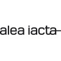

Me
After completing my bachelor's degree in "Journalism and Communication Science" at the University of Zurich, I immediately added the diploma course "Web Design & Development" at SAE Munich.
At the same time, I worked at Zebrabox self storage in the field of marketing and social media (SEO, blog, content, texts, ads).
I then got a job as a project manager at the up-and-coming Zurich marketing agency Addvanto, where I was also responsible for parts of the front-end development.
In 2023, I worked as a special education teacher with an autistic student and later as a primary school teacher in a sixth grade class. During this time, I was able to acquire many social and leadership skills.
With a dose of marketing experience, social skills, acquired intellect and absorbed technical know-how under my belt, I now want to return to the world of technology.
I am therefore looking for a junior position as a Web Developer in a young-at-heart team with room to grow for a motivated team player.
GSAP Animations
One discipline in the curriculum of my web design studies at SAE Munich was to create animations. I decided to use Greensock's library "GSAP" since it is perfectly compatible with my individual javascript code. That was real fun!
Check out the project on my github: GSAP Animations.
REACT Web App
A Single Page Application built with React using a PHP Api in its backend. Users can create quiz question about the Pokemon video game and challenge the community. MySql serves as database technology. The backend is powered by an Apache Server.
Check out the project on my github: Web App Frontend & Backend.
REACT Web App
A Single Page Application built with React using a PHP Api in its backend. Users can create quiz question about the Pokemon video game and challenge the community. MySql serves as database technology. The backend is powered by an Apache Server.
Check out the project on my github: Web App Frontend & Backend.
Career
2023 | Primary Teacher
Municipality Glarus Nord
Class teacher in a 6th grade at primary level
2023 | Special Education Teacher
Heilpädagogisches Zentrum Glarnerland
Educational support for an autistic person
2022 | Project Manager
Addvanto
Internal project management, front-end development for insurance companies, media houses and telecommunications providers, among others.
2020 - 2022 | Diploma Webdesign & Development
SAE Institute Germany
Screen design, UX and usability, front-end and backend development. This 75% practice-oriented diploma qualifies students for the current industry. More about SAE Webdesign.
2019 - 2022 | Sales & Marketing Intern
Zebrabox
Content creation, SEO website, writing blog articles
2015 - 2019 | BA Bachelor of Arts
University of Zurich
Major in journalism and communication Studies, minor in business administration
2018 | Media planning Intern
SRF - Schweizer Radio und Fernsehen
Target group-oriented trailer planning & monitoring for the stations SRF 1 and SRF Zwei.
2017 | ICT Test Engineer
Abraxas Informatik AG
Tax area: supervision of the rules and regulations of a tax software for the public sector.

2015 | Trainee Project Assistance
Alea Iacta
Public relations, writing PR and media texts, assisting management